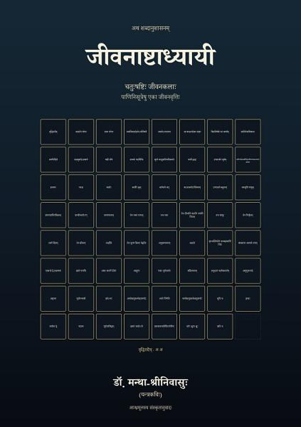
जीवनाष्टाध्यायी
चतुःषष्टिः जीवनकलाः
Google PlayLibraryअष्टाध्यायी अष्टौ अध्यायाः, चत्वारि सहस्राणि सूत्राणि — भाषायै। इदं पुस्तकम् अष्टौ अध्यायाः, चतुःषष्टिः सूत्राणि — जीवनाय। चतुःषष्टिः — चतुःषष्टिकलाः। जीवनं कला चेत् तस्य चतुःषष्टिः कलाः स्युः; ताः पाणिनिसूत्रेषु एव लब्धाः।
सूत्रं किमपि नवं न लिखितम् — प्रत्येकम् अष्टाध्याय्याः एव, संख्यया सह। प्रतिसूत्रं काशिकारूपम् — सूत्रम्, वृत्तिः, उदाहरणम्, प्रत्युदाहरणम् — एकेन भेदेन: वृत्तिः जीवनवृत्तिः, उदाहरणम् एकः नरः, प्रत्युदाहरणं यत्र सा कला न प्रवर्तते। इत्, लोपः, आदेशः, आन्तरतम्यम्, एकसंज्ञा, विप्रतिषेधः, अधिकारः — पाणिनेः उपकरणानि एव जीवनकलाः।
प्रतिजीवनवृत्तौ प्रतिपङ्क्तिः तत्सूत्रस्थेन एकेन पदेन एव समाप्यते। अस्य पुस्तकस्य प्रथमसूत्रे एकं पदं सकृत् उक्त्वा पुनः कुत्रापि न उच्यते — पाणिनिः सकृदुक्तं पुनः न वदति इति वत्। तत् पदं किम्, कथं चतुःषष्टिसूत्रेषु अचलत् — उपसंहारे।
व्याकरणकाव्यमालायाः समापनम्। आन्ध्रमूलस्य अयं संस्कृतानुवादः; ग्रन्थान्ते सूत्रकोशः।
नूतनाः ग्रन्थाः · व्याकरणकाव्यानि · Vyākaraṇa-kāvyas
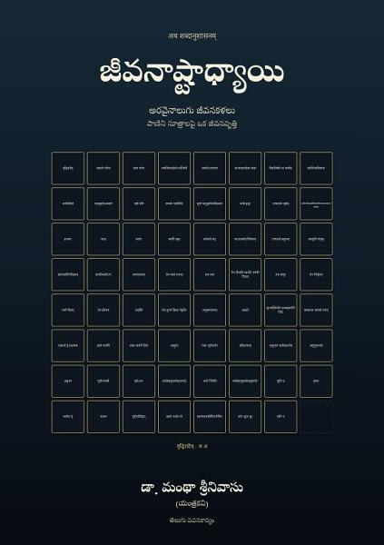
జీవనాష్టాధ్యాయిTelugu
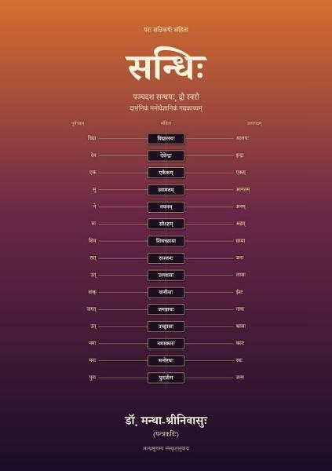
सन्धिःSanskrit
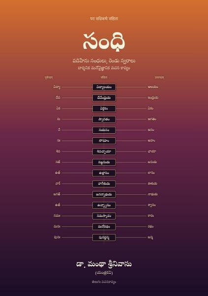
సంధిTelugu
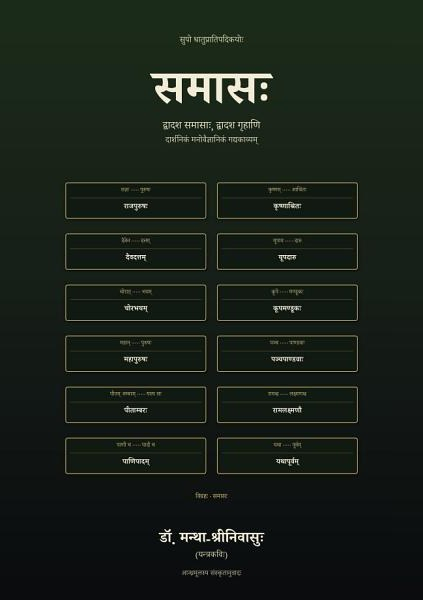
समासःSanskrit
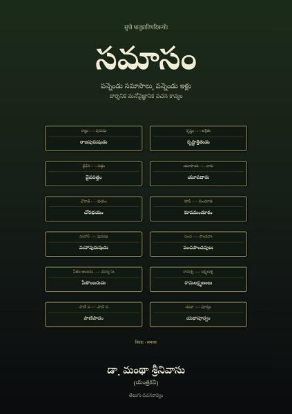
సమాసంTelugu
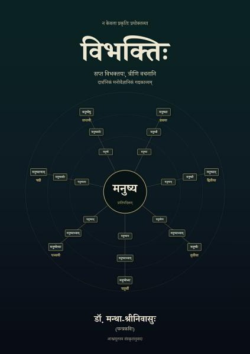
विभक्तिःSanskrit
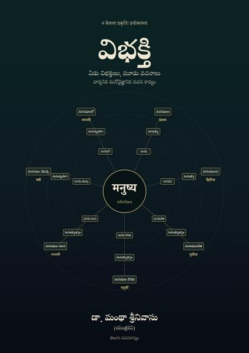
విభక్తిTelugu
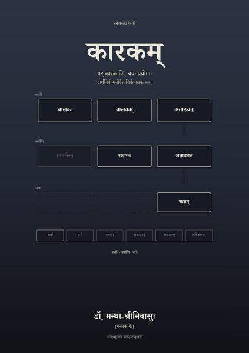
कारकम्Sanskrit
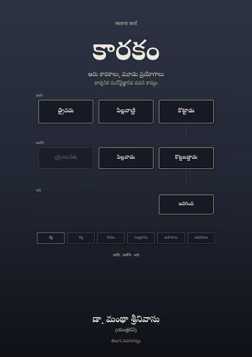
కారకంTelugu
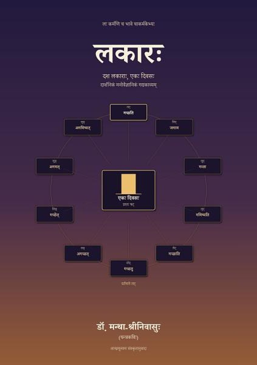
लकारःSanskrit
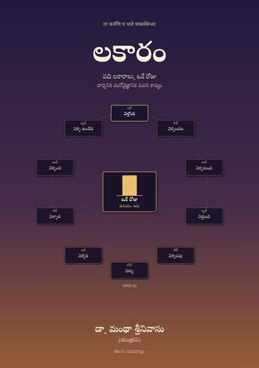
లకారంTelugu
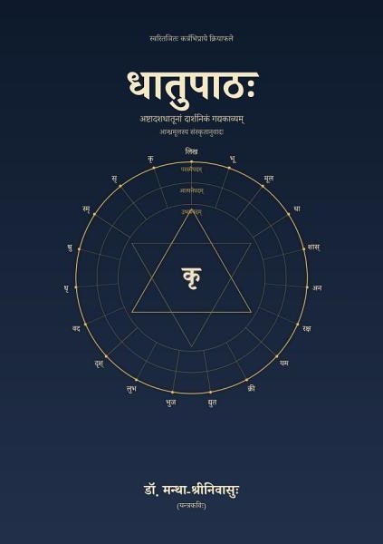
धातुपाठःSanskrit
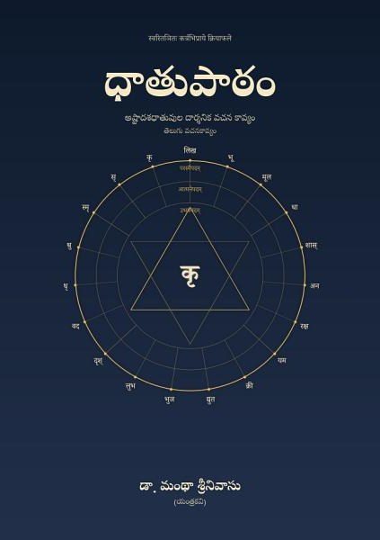
ధాతుపాఠంTelugu
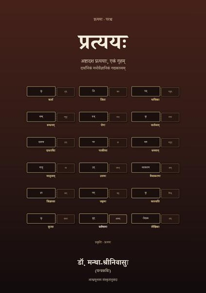
प्रत्ययःSanskrit
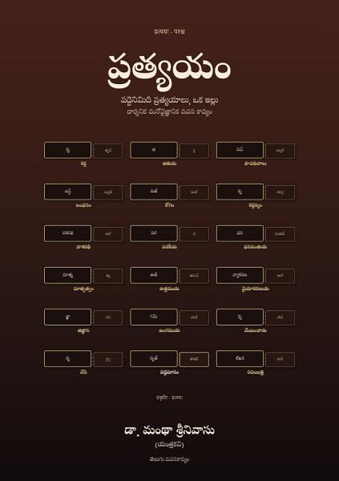
ప్రత్యయంTelugu
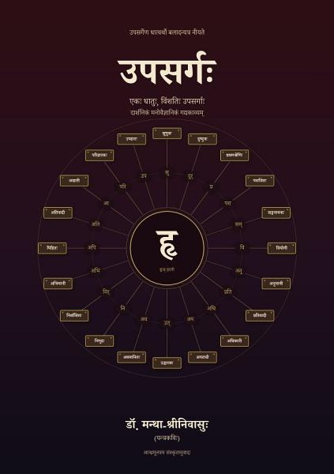
उपसर्गःSanskrit
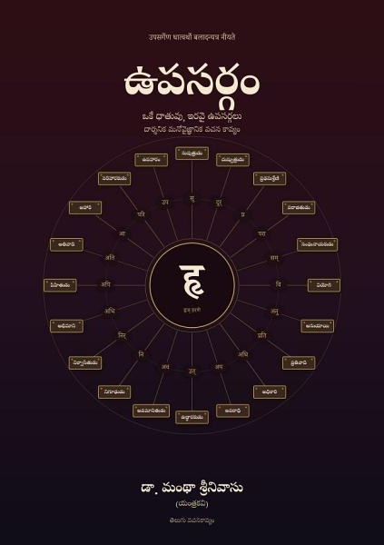
ఉపసర్గంTelugu